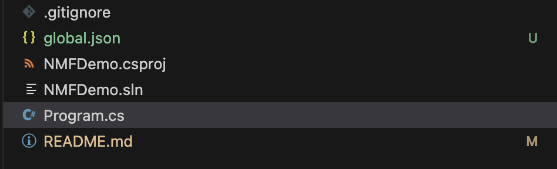
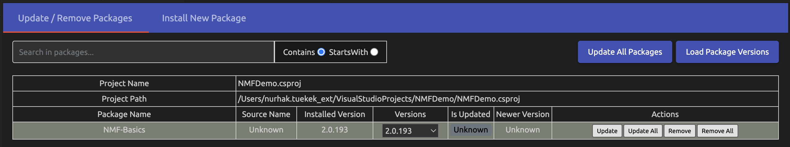

NMF Setup
SDK Setup
Before we download the NMF-Basics package, our application first needs the correct .Net SDK version. This would be all .Net SDK 6 versions. To check if you have the right versions installed enter the command:
dotnet --list-sdksThe command should show you the following output:
6.0.100 [/usr/local/share/dotnet/sdk]
To ensure that your application uses the correct .NET SDK version, create a global.json file in the root directory of your project. Open a text editor and add the following content to the global.json file:
{
"sdk": {
"version": "6.0.100"
}
}
An example of the folder structure would be: In the directory
'/Users/hsrm/VisualStudioProjects/NMFDemo' is where we want our application to run, then we also save our global.json file in this directory.
installing the right packages via nuget
Next, we create the application. For initialization, we create a simple ConsoleApplication with a simple main method:
'/Users/hsrm/VisualStudioProjects/NMFDemo/Program.cs'

Then we load the corresponding package via nuget Package Manager, NMF-Basics.

The project .csproj file should then have the following package reference:
<Project Sdk="Microsoft.NET.Sdk">
<PropertyGroup>
<OutputType>Exe</OutputType>
<TargetFramework>net6.0</TargetFramework>
<ImplicitUsings>enable</ImplicitUsings>
<Nullable>enable</Nullable>
</PropertyGroup>
<ItemGroup>
<PackageReference Include="NMF-Basics" Version="2.0.193" />
</ItemGroup>
</Project>
For all those who do not have a PackageManager Console (Mac users), you must download the Ecore2Code command separately for model generation:
dotnet tool install --global NMF-Ecore2Code --version 2.0.193